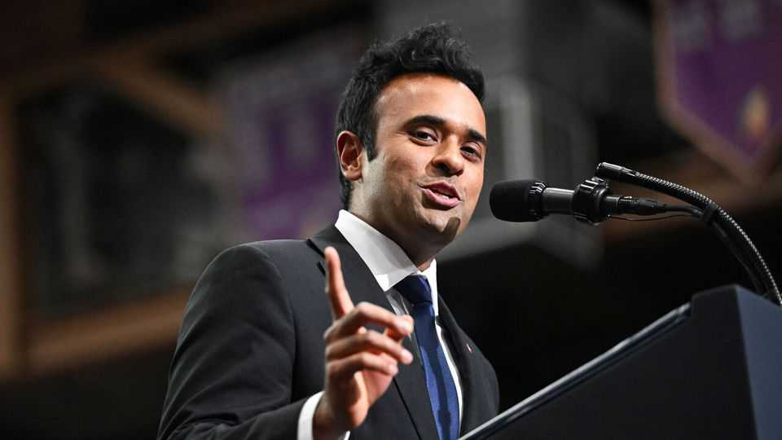
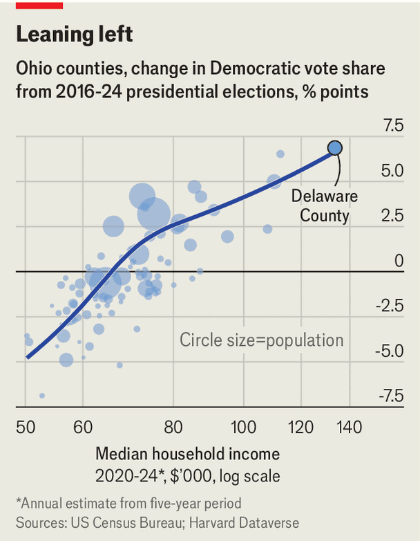

Vivek Ramaswamy is too MAGA and not MAGA enough
A candidate once considered a rising star gets stuck in Ohio

Oct 15th 2026
A covered picnic area in a park on a damp, blustery day is hardly an ideal spot for a political rally, so it was difficult to fault the members of the Delaware County Republican Party for their muted enthusiasm. At an event in a suburb of Columbus on October 10th some 75 people sat through an hour of speeches by candidates and local police officials. The highlight of the show was Vivek Ramaswamy, a pharmaceutical billionaire and former presidential candidate who is the party’s candidate for governor. He promised to be an even-handed and independent leader. “You don’t just tell [people] what they want to hear,” he said.
No more than 15 yards away, it was easy to find views that Mr Ramaswamy’s crowd did not want to hear. In an adjacent children’s playground Jared Hessler, a 39-year-old technology worker who was with his young son, explained that he will not be voting for Mr Ramaswamy. Mr Hessler used to vote Republican, but over the past two elections he has pivoted towards the Democrats and is enthusiastic about Amy Acton, the Democratic candidate for governor. “I would say that the main driving force is just being so sick and tired of Trump,” he says.
That sentiment is a problem for Mr Ramaswamy. Mike DeWine, Ohio’s term-limited Republican governor, won 62% of the vote in 2022 and Donald Trump has won the state in three consecutive presidential elections. Now most polls show Dr Acton with a slight lead. Mr Ramaswamy is proving too MAGA for Ohio’s moderates and not MAGA enough for many Republicans.

Delaware County is the richest and best-educated in Ohio. Not long ago it was also at the heart of Republicanism in the state, with its residents favouring George W. Bush by 32 points in 2004. But as it has become more built up and diverse, it has shifted Democratic. By 2024 Mr Trump’s margin was less than seven points.
Mr Ramaswamy has some traits that would, presumably, appeal to the suburban Republicans who have become sceptical of the president. In his speeches, he emphasises cutting business taxes rather than deportation. The son of Indian immigrants, he celebrates people who come to America legally and backs immigration reform. Last year he issued a stark criticism of his party’s nativist wing in an article for the New York Times. Many of his campaign staff previously worked for John Kasich, a moderate Republican who served as Ohio’s governor from 2011 to 2019.
In practice, however, he remains tainted by his links to an unpopular president with whom he has appeared at two rallies in the past month. At a party on the outskirts of a recent Ohio State football game (as close as a secular event can come to being sacred), former Republicans were easy to find. Voters for Mr Ramaswamy were not. “I am going Democrat all the way, even though I’m a Republican,” said one enthusiastic middle-aged tailgater named Debbie. Mr Trump is the reason why. “The insanity of this particular administration has just put me over the top,” she explains. It is Dr Acton, who led the state’s response to the covid pandemic, who is seen as the moderate. In 2020 Mr DeWine called her a “hero”. Mr Trump is trying to rebrand her as a “radical-left lunatic”.
Mr Ramaswamy has another problem, too, on his right. In the primary election his opponent, Casey Putsch, holding a rifle, invited Mr Ramaswamy to “play cowboys versus Indians”. He also attacked him for being “a HINDU man!” Mr Ramaswamy beat him handily, but Mr Putsch still managed to win 18% of the vote. Nick Fuentes, a white-nationalist podcaster with a devoted following, said last year that his main goal for 2026 was “to deny Vivek Ramaswamy the governorship”. This month he endorsed Dr Acton, calling Mr Ramaswamy an “anchor baby”.
Pinched from both sides, Mr Ramaswamy is resorting to an exceptionally ugly campaign. His adverts and those of the superPACs supporting him centre almost exclusively on Dr Acton. Some allege she is a drunk and a drug addict (based on a police report of her having a shouting match with her husband). Others accuse her of being responsible for the death of an elderly woman during the covid pandemic (the woman had in fact lived and died in Kentucky). Mr Ramaswamy will probably run for president again if he does become governor. But for a man seeking to lead his party, he looks increasingly lost in it. ■
Stay on top of American politics with The US in brief, our daily newsletter with fast analysis of the most important political news, and Checks and Balance, a weekly note that examines the state of American democracy and the issues that matter to voters.